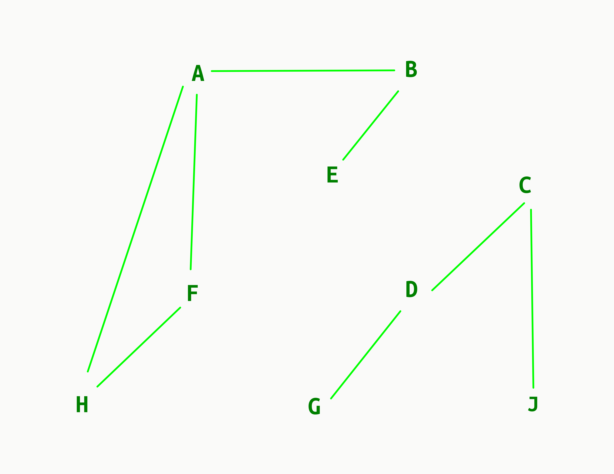
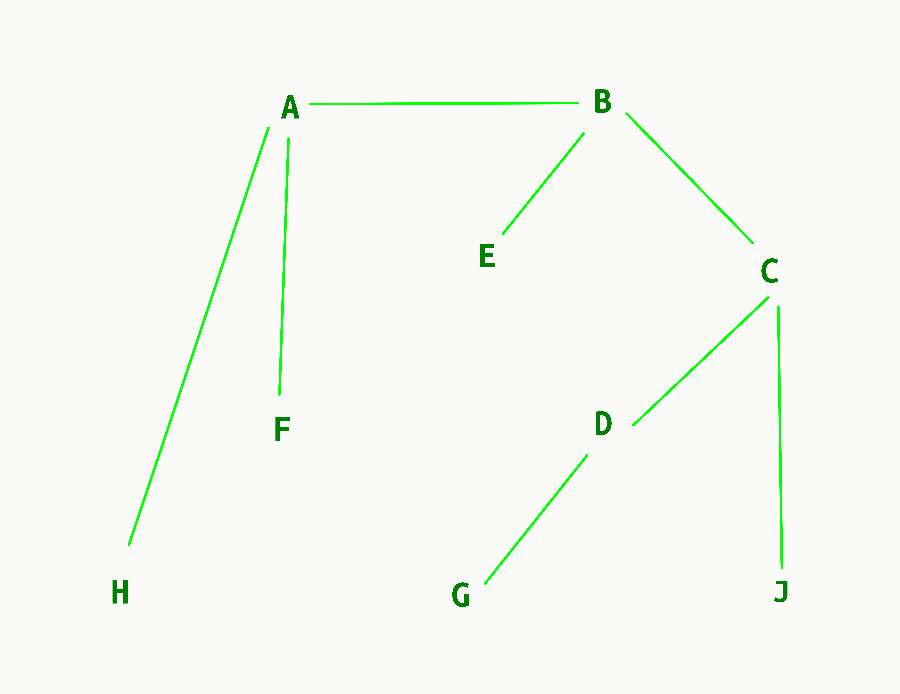
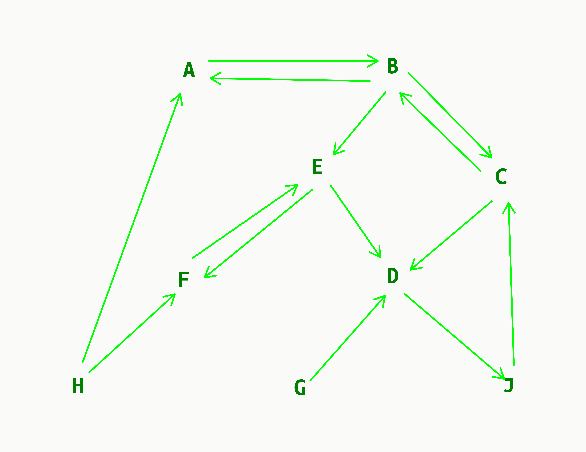
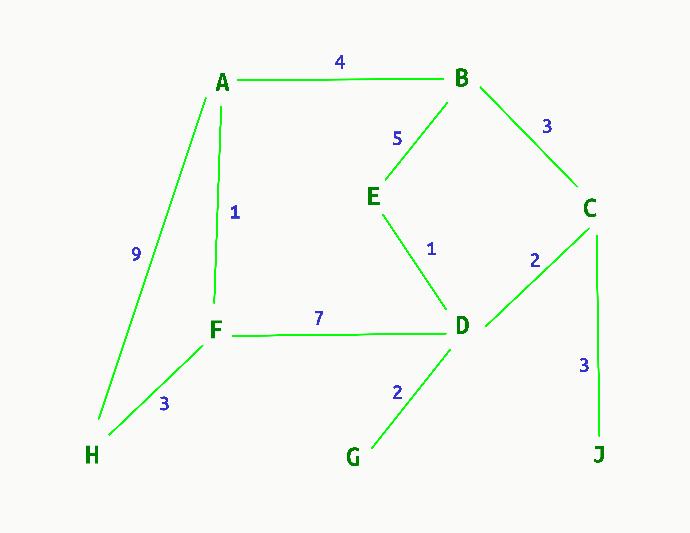
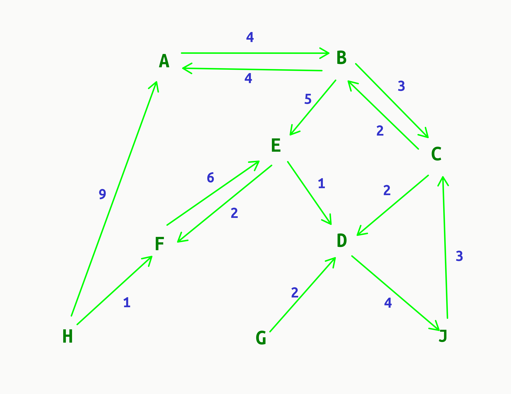

class: center, middle, title-slide # CSCI-UA 102 ## Data Structures <br> ## Graphs - Introduction .author[ Instructor: Joanna Klukowska <br><br><br> ] .license[ Copyright 2020 Joanna Klukowska. Unless noted otherwise, all content is released under a <br> [Creative Commons Attribution-ShareAlike 4.0 International License](https://creativecommons.org/licenses/by-sa/4.0/).<br> Background image by Stewart Weiss<br>] --- layout:true template: default name: section class: inverse, middle, center --- layout:true template: default name: breakout class: breakout, middle --- layout:true template:default name:slide class: slide .bottom-left[© Joanna Klukowska. CC-BY-SA.] --- template: section # Graphs ## Terminology and Definitions --- ## Graphs: terminology and definitions .right-column2[.center[ <img width="400px" alt="undirected graph" src="img/15/graphs-1.png"> ]] - Graphs consist of - _nodes_ / _vertices_, <br/>the nodes on the right are: A, B, C, D, E, F, G, H, J - _edges_, <br/>the connections between nodes. The graph on the right has eleven edges: A-B, A-F, A-H, B-C, B-E, C-D, C-J, D-G, D-F, E-D, and F-H (listed in no particular order). -- - A _path_ is a sequence of nodes in which each consecutive pair is connected by an edge. In the graph on the right, one path from A to G is A-B-E-D-G. - The _length of a path_ is the number of edges in it. The path above has length 4. <br/> - A _cycle_ is a path that starts and ends at the same node. For example, A-B-E-D-F-A is a cycle. -- - Two nodes are _adjacent_ (or are _neighbors_) if there is an edge between them. --- ## Graphs: terminology and definitions .right-column2[.center[ <img width="350px" alt="undirected connected graph" src="img/15/graphs-1.png"> <p></p> ]] - A graph is _connected_ if there is a path between every pair of nodes, as in the graph on the upper right. -- - A graph is _disconnected_ if it is not connected, as in the graph on the lower right. - The connected parts of a disconnected graph are called its _connected components_. -- - A _tree_ is a connected graph with no cycles, like the graph below. <p></p> --- ## Graphs: terminology and definitions .right-column2[.center[ <p></p> ]] - A _directed graph_ has edges that can be traversed in only one direction. -- - There is an edge from H to A, but no edge from A to H. -- - A path from B to D is B->E->D, while a path from D to B is D->J->C->B. -- - If edges exist in both directions, they are shown as two directed edges, like B->C and C->B, or as a single arrow pointing in both directions, like B<->C. --- ## Graphs: terminology and definitions .right-column2[.center[ <p></p> <p></p> ]] - A _weighted graph_ contains edges that have _weights_ assigned to them. - The graph on the upper right is an _undirected weighted graph_. - The graph on the lower right is a _directed weighted graph_. --- template: section # Graph Representations --- name:adj-list ## Adjacency List .right-column2[ ``` class Node { label/data list of nodes adjacent to it } ``` ] - Each node is assigned an _adjacency list_ of nodes that are adjacent to it. - The adjacency list can be stored as a linked list or an array. - The graph itself is represented as a list of nodes. --- template:adj-list .below-column2[] .right-column2[.center[ <img width="400px" alt="undirected graph" src="img/15/graphs-1.png"> ]] An adjacency list representation for the graph on the right could be a list as follows: ``` A, [B, F, H] B, [A, C, E] C, [B, D, J] D, [C, E, F, G] E, [B, D] F, [A, D, H] G, [D] H, [A, F] J, [C] ``` (each row represents a single node). -- Note that in an undirected graph, if a node is listed in the adjacency list of another node, then the symmetric case has to be true as well (since the adjacency relation is symmetric. For example, if E is adjacent to D, then D is adjacent to E. --- template:adj-list .below-column2[] .right-column2[.center[ ]] In a directed graph, there is no symmetry. An adjacency list representation for the graph on the right could be a list as follows: ``` A, [B] B, [A, C, E] C, [B, D] D, [J] E, [D, F] F, [E] G, [D] H, [A, F] J, [C] ``` (each row represents a single node). --- name:adjacency_matrix ## Adjacency Matrix - An _adjacency matrix_ indicates the edges in a graph. - It is typically stored as a 2D array. After assigning each node an index, `matrix[a][b]` indicates whether there is an edge from node `a` to node `b`. - For undirected graphs, `matrix[a][b] = matrix[b][a]`. - For unweighted graphs, the matrix can store binary information. - For weighted graphs, the matrix values indicate edge weights. - A drawback is that it uses $n^2$ elements, many of which may be zero (indicating no edge). --- template:adjacency_matrix .right-column2[.center[ <img width="400px" alt="directed graph" src="img/15/graphs-1.png"> ]] .left-column2[ Example for an undirected, unweighted graph | | A | B | C | D | E | F | G | H | J | |:---:|:---:|:---:|:---:|:---:|:---:|:---:|:---:|:---:|:---:| | **A** | 0 | **1** | 0 | 0 | 0 | **1** | 0 | **1** | 0 | | **B** | **1** | 0 | **1** | 0 | **1** | 0 | 0 | 0 | 0 | | **C** | 0 | **1** | 0 | **1** | 0 | 0 | 0 | 0 | **1** | | **D** | 0 | 0 | **1** | 0 | **1** | **1** | **1** | 0 | 0 | | **E** | 0 | **1** | 0 | **1** | 0 | 0 | 0 | 0 | 0 | | **F** | **1** | 0 | 0 | **1** | 0 | 0 | 0 | **1** | 0 | | **G** | 0 | 0 | 0 | **1** | 0 | 0 | 0 | 0 | 0 | | **H** | **1** | 0 | 0 | 0 | 0 | **1** | 0 | 0 | 0 | | **J** | 0 | 0 | **1** | 0 | 0 | 0 | 0 | 0 | 0 | ] --- name:edge_list ## Edge List - An _edge list_ is a list that contains all edges in the graph in some order. - An edge list is useful when an algorithm needs to examine every edge. It is less convenient when the algorithm needs to find all edges incident to a particular node. - Elements in an _edge list_ are pairs of nodes indicating the endpoints of each edge. --- template:edge_list .right-column2[.center[ ]] .left-column2[ Example for a directed, unweighted graph. ``` A->B B->A B->C B->E C->B C->D D->J E->D E->F F->E G->D H->A H->F J->C ``` ] --- ## Implicit Graph - An _implicit graph_ is not explicitly stored using a graph data structure (like the ones on the previous slides). - Implicit graphs are useful when edge connectivity can be determined easily using a set of rules. For example: -- - A graph contains N nodes labeled from 0 to N-1. There is an edge between two distinct nodes if the sum of their labels is even. <br/>For example, nodes labeled 3 and 57 have an edge between them, but nodes labeled 3 and 56 do not. -- - A 2D grid represents a labyrinth. Passable cells are marked with `.` and solid walls with `#`. Each passable cell is an _implicit_ node in a graph. There is an _implicit_ edge between two nodes if the corresponding cells share a side. <br/> <pre> ####.##.## #....#..## #.####.#.# #......#.# #####....# ########## </pre> --- template: section # Graph Traversals --- ## Traversing a Graph Task: Given a starting node in a graph, visit every node that can be reached from it. -- - depth first search traversal (DFS) - breadth first search traversal (BFS) --- name:dfs ## Depth First Search Traversal .right-column2[ <img width="400px" alt="directed graph" src="img/15/graphs-1.png"> ] --- template:dfs - Follows one path through the graph as long as there are unvisited nodes. - When it cannot find another node to visit, it _returns_ to a previous node and follows any unexplored paths from there. - Keeps track of visited nodes. <p> --- template:dfs What order will the DFS traversal visit the nodes in the graph on the right when we start DFS at A? -- There is more than one possible traversal. The exact order depends on how the graph is stored and the order in which we access the nodes adjacent to a given node. Let's look at some possible traversals --- template:dfs - start with A (visited: A) -- - We have three choices for the next node: B, F, or H. Let's pick F (visited: A, F). -- - From F, we can go to D or H. Let's pick H (visited: A, F, H). -- - At H, the only choices are A and F, and both have been visited. We return to F and look for other options; the only one is D (visited: A, F, H, D). -- - From D, we can go to E, G, or C (since F has already been visited). Let's pick G (visited: A, F, H, D, G). -- - G has no unvisited neighbors, so we return to D. Let's pick E (visited: A, F, H, D, G, E). -- - E's only unvisited neighbor is B, so we go there (visited: A, F, H, D, G, E, B). -- - B's only unvisited neighbor is C, so we go there (visited: A, F, H, D, G, E, B, C). -- - C's only unvisited neighbor is J, so we go there (visited: A, F, H, D, G, E, B, C, J). -- At this point, we have visited all the nodes. Our traversal is: <br/> A, F, H, D, G, E, B, C, J </br> An algorithm would still need to check whether all nodes have been visited. --- template: dfs Here are two other DFS traversals starting at node A: - A, B, E, D, F, H, G, C, J - A, B, C, J, D, E, F, H, G -- __Task__ List all possible traversals starting at node with label J. --- template:dfs An algorithm using the adjacency list `adj` of a graph with `n` nodes and `m` edges runs in `O(n + m)` time. .below-column2[ ``` visited[n] - boolean array, initially all false dfs ( start ) if visited[start] return //already processed this node visited[start] = true //mark before exploring neighbors visit/process the node for neighbor in adj[start] dfs( neighbor ) ``` ] --- name:bfs ## Breadth First Search Traversal .right-column2[ <br/><br/> <img width="400px" alt="directed graph" src="img/15/graphs-1.png"> ] --- template:bfs - Visits nodes in order of their distance from the starting node, where distance is the length of the shortest path. - Visit all nodes whose distance from the start node is 1. - Then visit all nodes whose distance from the start node is 2. - ... -- What order will the BFS traversal visit the nodes in the graph on the right when we start BFS at A? -- Again, the exact order depends on how we store the graph and the order in which we access the nodes adjacent to a given node. Here are possible traversals for the graph on the right. - A, B, F, H, C, E, D, G, J -- __Question__ Which nodes at the same distance from A can be reordered without making this an invalid BFS traversal? Explain. -- __Task__ Propose a BFS traversal of this graph starting at node J. --- template:bfs An algorithm using the adjacency list `adj` of a graph with `n` nodes and `m` edges runs in `O(n + m)` time. ``` visited[n] - boolean array, initially all false queue - stores nodes to process bfs ( start ) visited [ start ] = true visit/process the start node queue.push( start ) while queue is not empty node = queue.dequeue() for neighbor in adj[node] if ! visited[neighbor] visited[neighbor] = true visit/process neighbor queue.push( neighbor ) ``` --- template:section # Examples and Things to Think About --- ## Graph Implementation Graphs serve many different purposes, so their implementations need to suit the task. Many programming languages' standard libraries do not provide a general-purpose graph data structure. Implement a graph. Pick any implementation you want (or try it with all of them). Assume that the graph nodes have integer labels from 1 to N. The graph is undirected and is described by a list of edges: <br/>`a b` indicates that there is an edge between `a` and `b`. -- How would your implementation differ for a directed graph? -- Modify your code to handle weighted graphs. In this case, each edge is described as <br/>`a b w`, indicating an edge from `a` to `b` with weight `w`. --- template: challenge ## Challenge Design algorithms for the following problems: - Given a pair of nodes, find the length of the shortest path between them. Solve this for unweighted and weighted graphs. - Given a node, find the length of the shortest path from it to every other node in the graph. Solve this for unweighted and weighted graphs. - Determine whether a graph is connected or disconnected (algorithmically, not visually). If it is disconnected, find the number of nodes in each connected component. - Determine whether a graph is a tree (algorithmically, not visually). --- ## Solving Problems Try using your graph implementation to solve the following problems: - [Ab Initio](https://open.kattis.com/problems/abinitio) - The description is long, but the problem is fairly approachable if you already have a graph implementation. - [Flying Safely](https://open.kattis.com/problems/flyingsafely) - [Cantina of Babel](https://open.kattis.com/problems/cantinaofbabel) - This problem is not difficult, but first you need to figure out how to model it as a graph. </optgroup>